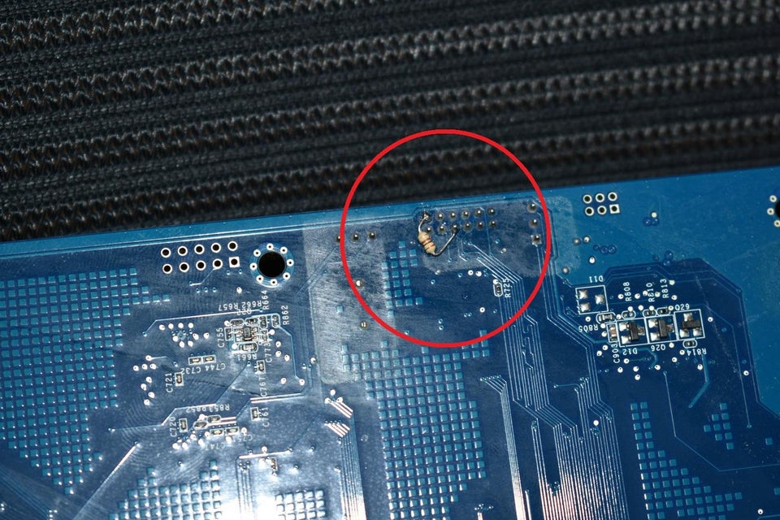
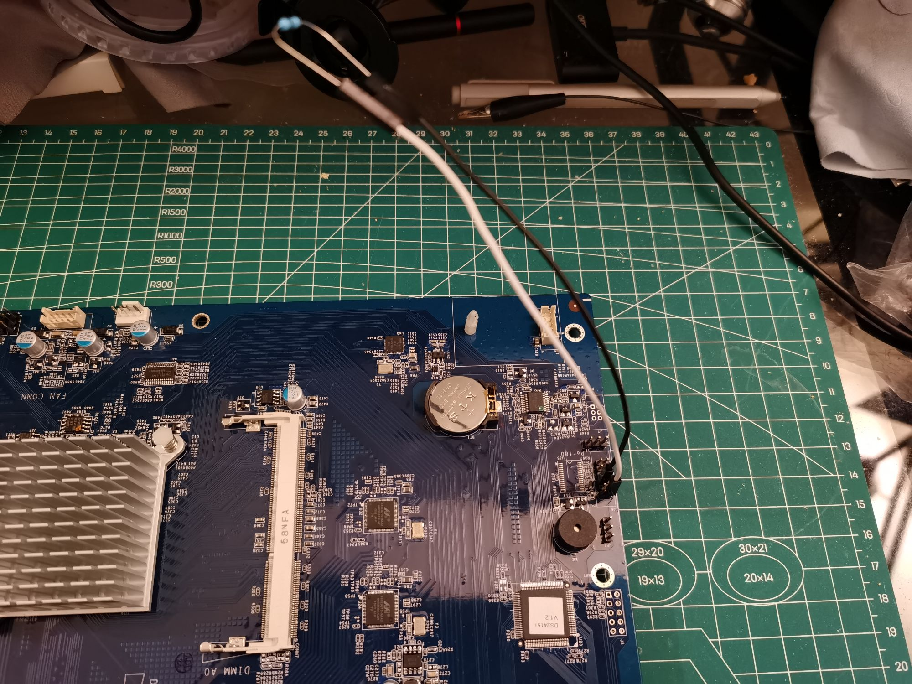
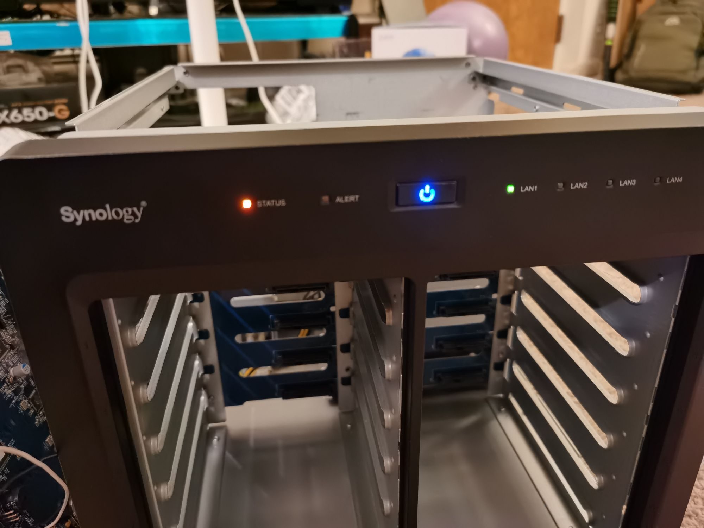
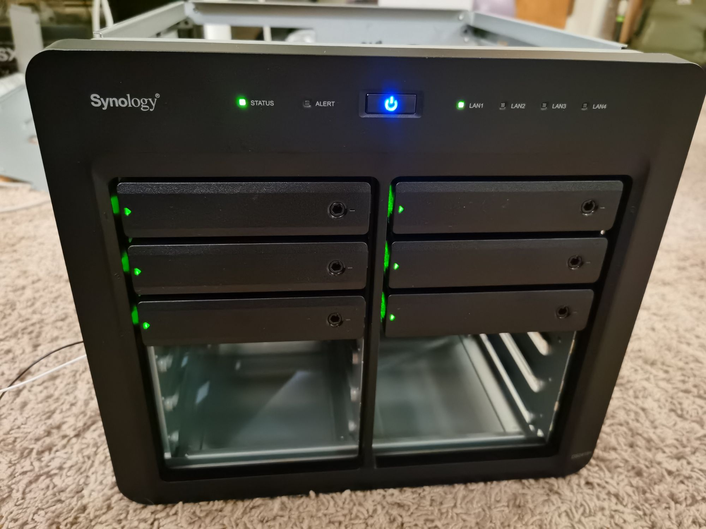
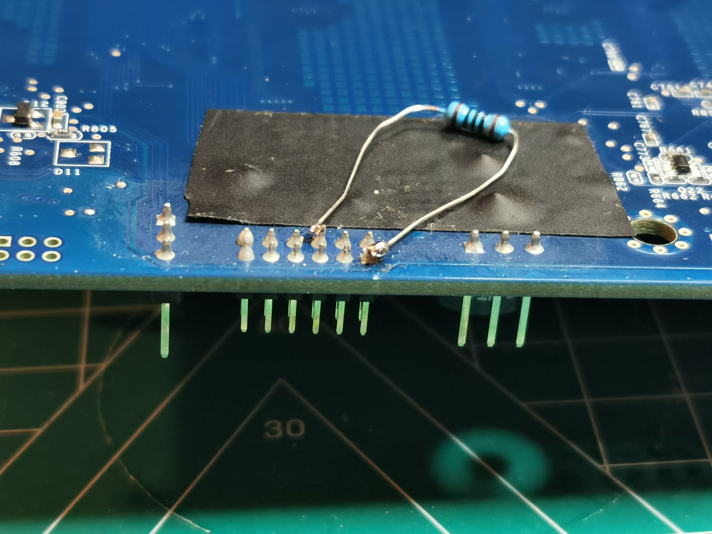

Long story short. In January, the manager of computers in our department told me the Synology NAS DS2415+ for our group was dead for unknown amount of time... By checking my backup logs, I found the device has been died in the end of November...
Without too much thinking, we both accepted the fact that the NAS has died, so we should just leave it there for the time being. Until this week... one of our postdocs asked me how to back her data up, so I thought why not check what exactly happened to the NAS, since its situation would not get any worse anyway.
So I just googled "ds2415+ motherboard repair". To my surprise, there are many posts where the devices were in the same or very similar situations. To name a few,
All these posts point to the same problem: the CPU used in these NAS, Intel Atom C2358 failed, due to a flaw in the clock signal component. The component degrades over time. Eventually (usually after around 18-month use), the component starts to fail and then the device will not boot. Our NAS was bought in 2016 and made all the way to the end of 2020, which is kind of impressive.
The fix is simple, soldering a 100 Ω resistor on two pins on the motherboard.
Photo taken by u/adprom and posted here.Time to tear own machine down! Unfortunately, I did not take photos when taking the NAS apart, but the process was straightforward. To summarize,
- Remove the top panel,
- Remove all cabled connected to the motherboard,
- Remove all four screws holding the right panel,
- Remove the motherboard from the right panel.
To test if the fix could really work on our NAS, I used two DuPont wires to temporarily connect the resistor onto the motherboard.
Connecting the resistor.Then I plugged the RAM in and only connected the 24-pin ATX connector, 4-pin EPS connector and the front LED cable. And guess what? The device booted up, though the status LED was amber because there was no bootable drive detected.
Successful minimum boot!All good! Let's connect everything back, including all the disks and the rear fans (If the rear fans are not connected, the NAS will flash an amber alert LED and beep every 3 seconds.) and test again!
All green!Since our NAS has a static IP address in the settings, I could not access the web UI directly. The trick is change the IPv4 address of the network adapter to the same range as the static IP of the NAS, set the mask t0 255.255.255.0, and leave everything else blank.
Perfect! Time to solder the resistor on the back of the motherboard and this time, it took my 6 to 7 times to finally get a kinda stable soldering.... I used an insulation tape to cover the pins that could touch the lead of the resistor.
RIP, my poor soldering skills. In fact, the technician in our department redid the soldering one day later... which is way better than I did......Now the NAS fully revived! I saved some hundred bucks for my advisor.